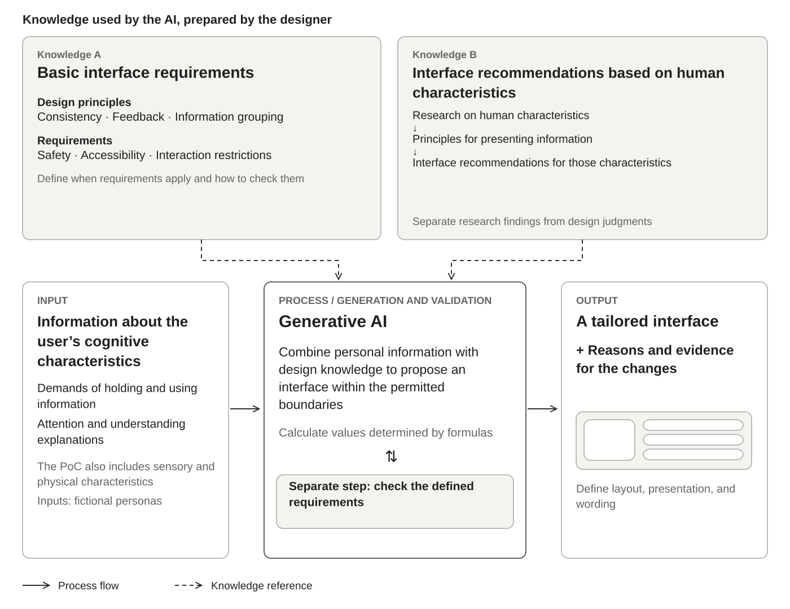
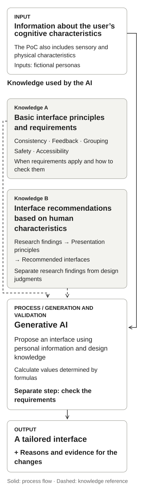
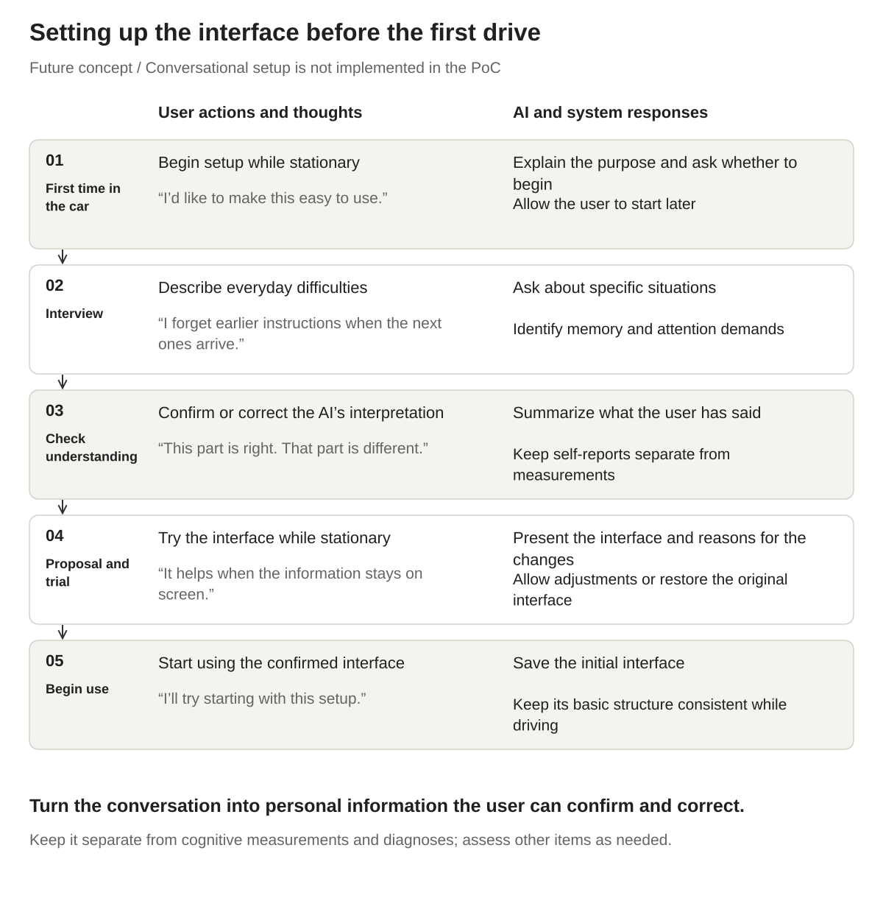
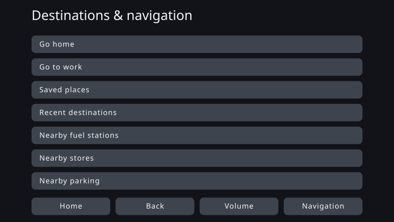
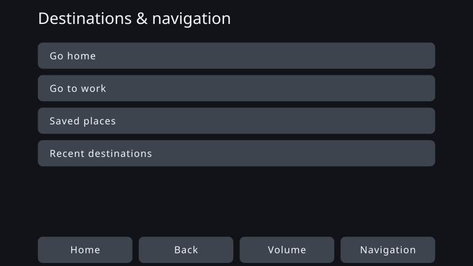
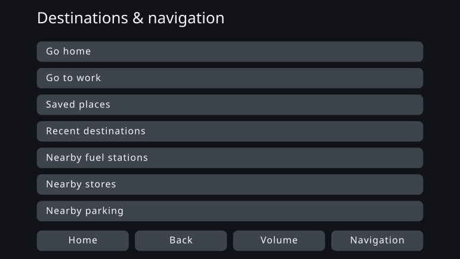

Personalizing Interfaces Through Constraint-Driven Design
August 2026
Overview
This project proposes a system that takes information about cognitive characteristics relevant to interface use and generates an interface tailored to that person. It combines interface design principles, safety and accessibility requirements, and research on human characteristics.
I used an approach I call constraint-driven design: people define the requirements and when they apply, and generative AI develops concrete proposals within those boundaries. Using car navigation as a test case, I built a proof of concept that generates interfaces for 13 fictional personas, including sensory and physical characteristics, and validates the output against the requirements in a separate step.
The comparison revealed one clear change in screen layout in response to a physical characteristic, while most outputs showed little visual change. Usability and safety have not been tested with users. The work helped identify which decisions could be left to generative AI and which requirements restricted the scope for personalization.
Background: how many different needs can one interface meet?
Most products provide a shared interface designed for as many people as possible. But people differ in how much information they can process at once, how easily they direct their attention, how readily they understand wording, and how precisely they can operate small controls. An interface designed to accommodate many people may still be a poor fit for an individual.
Group-level evaluation also has limits. For example, the voluntary guidelines published by NHTSA in 2013 require at least 21 of 24 participants to meet each eye-glance acceptance criterion. This does not mean that everyone can use the interface equally well. [1]
Even when a product lets users change text size or the amount of information displayed, they must first discover the settings, recognize how those settings relate to their difficulties, and choose an appropriate adjustment. I started by asking whether these options were underused, leaving people with interfaces that did not suit them.
In car navigation, looking at and operating the screen compete with the attention required for driving. [1] If a poorly matched interface adds to that burden, it is worth exploring whether an interface tailored from the start could support both usability and safety.
Generative AI made it possible to prototype a process that turns personal information and design knowledge into an interface. I explored whether this could reduce the work of designing a separate interface by hand for each person.
This project did not examine how often people use these settings or how a poorly matched interface affects accident risk.
Proposal: combining personal information with two types of design knowledge
The system takes information about cognitive characteristics relevant to interface use. This proof of concept used fictional personas that also included sensory and physical characteristics. The AI considers this information alongside two sets of knowledge prepared in advance: basic interface design rules, and knowledge linking human characteristics to recommended interface designs.
The AI generates an interface within the permitted boundaries, and a separate check validates it against the requirements. The output includes the tailored interface and an explanation of what changed and why.


Input: information about the person
Inputs include how easily a person can hold and use information, how readily other stimuli distract them, and which kinds of explanations they find easiest to understand. The implementation also covers vision and manual dexterity. It uses information relevant to interacting with an interface, rather than determining the screen from a diagnosis alone.
Knowledge A: basic interface requirements
This set covers basic interface design principles: consistency, feedback on actions, information grouping, and the visibility of text and controls. It also defines restrictions on in-vehicle interaction and accessibility requirements, together with the situations in which they apply.
Knowledge B: connecting human characteristics to recommended interfaces
This set connects research on human characteristics to principles for presenting information and then to interface design. For example, difficulty holding information in mind while completing a task suggests reducing memory demands, which can lead to keeping necessary information on screen.
Research findings do not necessarily provide specific design values for a car navigation interface. I distinguish what the research establishes from the design judgments I draw from it. Improvements that benefit everyone are included in the basic rules, rather than counted as outcomes of personalization.
Proposed experience: finding a suitable interface before the first drive
Future concept: conversational setup has not been implemented in this proof of concept.
Imagine sitting in the driver’s seat of a new car for the first time. While the car is stationary, an AI agent asks about your usual experiences. Instead of navigating technical settings, you describe what you find difficult and what works well for you.

-
Before the first drive: starting the conversation
AI: “To tailor the screen to you, could you tell me a little about how you usually use interfaces? We can do this later if you prefer.”
The user understands the purpose and chooses whether to begin now or later.
-
Interview: describing difficulties
AI: “When navigation instructions come one after another, what becomes hard to follow?”
User: “When the next instruction arrives, I sometimes forget what the previous one said.”
The AI asks about specific situations and identifies difficulties related to memory and attention.
-
Checking understanding: letting the user correct the AI
AI: “It sounds as though keeping the information on screen would be easier than remembering the steps. Have I understood that correctly?”
The user confirms or corrects the AI’s interpretation. Self-reported information from the conversation is kept separate from cognitive measurements and diagnoses. Any information that requires measurement would be assessed separately.
-
Proposal and trial: explaining the changes and trying the interface
AI: “To reduce what you need to remember, I suggest a screen that shows both the current action and the next step.”
While the car is stationary, the user tries tasks such as choosing a destination. They can say, “The previous version was clearer,” or, “I’d change this wording.” The proposal can then be adjusted, or the original interface restored.
-
Starting to use the confirmed interface
The confirmed interface is saved as the initial configuration. Its basic structure stays consistent while the car is moving, so the user can rely on what they have learned. They can revisit and adjust it while the car is stationary.
The conversation is intended to establish a suitable starting configuration through an exchange in which the user can explain their needs and correct misunderstandings. It is not a one-time classification of the user.
Implementation: separating fixed requirements from decisions left to AI
I implemented the pipeline from receiving information about a person’s characteristics to generating, validating, rendering, and comparing interfaces. Instead of a conversational interview, I used 13 fictional personas with different characteristics as input.
I chose car navigation because it provides concrete requirements to work with: screen area, touch-target size, the amount of information displayed, and which interactions are permitted while driving.
The constraint-driven design approach
In this project, constraint-driven design means that people define the requirements and when they apply, and AI proposes solutions within those boundaries.
A rule-based, parametric approach defines in advance which value or option corresponds to each input. Here, I defined the permitted ranges and the evidence supporting each decision, leaving generative AI to choose values and wording that had not already been fixed. The implementation combines calculated values with AI-generated decisions.
| What the evidence establishes | How it is implemented |
|---|---|
| A specific value or mathematical relationship is established | Calculate the value within the verified conditions and scope of application |
| The direction of adjustment is known, but not its magnitude | Choose a value consistent with that direction and the constraints, and record it as an untested design judgment |
| The evidence does not determine a suitable choice | Treat the result as an exploratory proposal requiring evaluation |
When translating research findings into interface decisions, I recorded the sources, conditions of application, and design judgments. The generated interface includes reasons for the changes, making it possible to trace why a particular design was proposed for a particular person.
Validating the generated interface in a separate step
The interface is generated as structured data describing screen elements and their layout, then rendered from that data. Code checks numerical and structural requirements. A separate large language model (LLM) check assesses some requirements that involve interpreting meaning. The system also records items outside the scope of automated checks and items that cannot be verified because information is missing.
These checks establish whether the output meets the defined requirements. User evaluation is still needed to determine whether it is easier to use or safer.
If conflicting requirements are found during design, the AI identifies them and a person decides how to revise them. The AI does not change the requirements on its own each time it generates an interface.
Interface comparison: a clear layout change and a largely unchanged layout
The comparison uses a shared default interface generated without personal characteristics as input. I compared this with interfaces generated from personal characteristics, using the same feature set.
The images below are prototype outputs, not before-and-after redesigns of a commercial navigation system. The personas are fictional inputs used to examine the effects of particular characteristics; they do not represent real users.
Larger touch targets
PS-12: a persona with difficulty making precise touch inputs
PS-12 has the same age, cognitive characteristics, and sensory characteristics as the PS-01 baseline; only manual dexterity differs. In the images, the touch targets are larger and the number of items in the center of the screen decreases from seven to four. This count excludes the fixed buttons along the bottom.
Shared default interface


Interface generated from personal characteristics


Larger touch targets mean fewer items can be selected on a single screen. The design is intended to preserve the same feature set, but this screenshot alone cannot establish how easy it is to navigate to subsequent screens.
A largely unchanged layout
PS-01: the baseline persona
Text size differs slightly, but the number of items, their layout, and the size of the touch targets remain much the same. With this combination of rules and inputs, the generated layout did not differ substantially from the shared default interface.
Shared default interface

Interface generated from personal characteristics


Results and discussion: how much freedom remained for generation?
The added value of generative AI remains unproven
In my visual comparison, PS-12 was the only output with a clearly different screen layout. Other outputs differed in wording and settings, but their appearance did not reveal a substantial difference in value.
The PS-12 changes could also be achieved through settings that adjust display size and the amount of information shown. There may be value in starting with a suitable interface without having to find those settings yourself. That experience needs to be evaluated separately from whether generative AI is needed to produce the interface.
This proof of concept did not show that tailoring an interface to cognitive characteristics improved task performance, or that generative AI produced a better interface than a rule-based approach.
The implemented design space was narrow
Once minimum text and touch-target sizes, screen area, and limits on displayed information were applied, few layout options remained. Many parts of the implementation were also determined by calculations or fixed structures, leaving the AI little room to choose among valid alternatives.
There was still flexibility in wording, but these differences were less visible than layout changes, and the visual assessment could not fully capture their value. I concluded that evaluating generative AI requires a range of valid proposals whose differences matter to the user’s experience.
This finding applies to the rules I collected, the interface parameters I selected, and the range of designs supported by this implementation. It does not establish a general limit of car navigation or personalized interfaces.
I did not directly review the full text of every relevant JIS, ISO, or other standard. I assembled the design knowledge from available papers, official guidance, public data, and the full text or previews of some standards. The scope of these sources may have affected the design options available. Further review is needed to determine whether the standards would open up more options or impose additional restrictions.
Working with AI improved the rules themselves
Another outcome was the process of defining requirements for generation and making them testable.
| Problem identified | Design response |
|---|---|
| Several lower bounds applied to the same element, but their combination was unclear | Clarified how the bounds apply together so that none is violated |
| A requirement intended only for driving also applied while the car was stationary | Specified the driving state in which each requirement applies |
| Wording complexity and the presence of icons were combined into one design dimension | Separated them into independent dimensions, restoring options that had been unnecessarily excluded |
| The AI used requirements that did not apply to the output being generated | Specified which requirements should be consulted for each output |
| Decisions intended for the AI had been fixed in the implementation | Revised the division of responsibilities between the specification and implementation |
The AI identified problems, I evaluated them, and the decisions were reflected in the design. This iterative process clarified which requirements should apply to everyone and where an interface could be personalized.
Next steps: evaluating personalization and the role of generative AI
The next step is to investigate two questions separately.
First, how valuable is an experience that provides a suitable initial interface without requiring the user to configure it? This would involve implementing the conversational interview, opportunities to correct the AI’s understanding, and an interface trial, then assessing the reliability of the input and the burden on the user.
Second, in which design contexts could differences between AI-generated proposals improve the experience? I want to explore contexts where the requirements still leave several valid options for organizing information and interaction flows.
A study with real users would compare three interfaces on the same task: the shared default, a rule-based interface adjusted using information about personal characteristics, and an AI-generated interface. Task completion time, errors, eye glances, and subjective workload would help distinguish the effects of personalization from those of using generative AI.
I also plan to review the relevant standards more closely and refine the distinction between research evidence and design judgment. Alongside making requirements testable, the next challenge is to retain options within them that offer meaningful differences for users.
References
- NHTSA, Visual-Manual NHTSA Driver Distraction Guidelines for In-Vehicle Electronic Devices (2013). These are voluntary guidelines. See VI.E for the eye-glance acceptance criteria and I.C and other sections for the discussion of attention and risk. This does not imply that the proof of concept has been certified as meeting that test. Read the document in the Federal Register